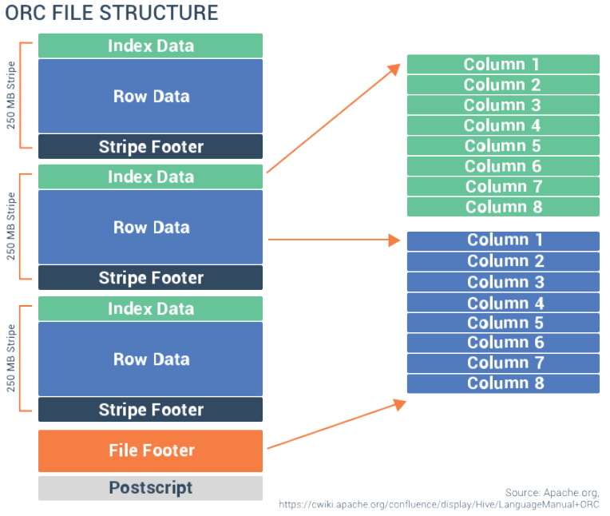
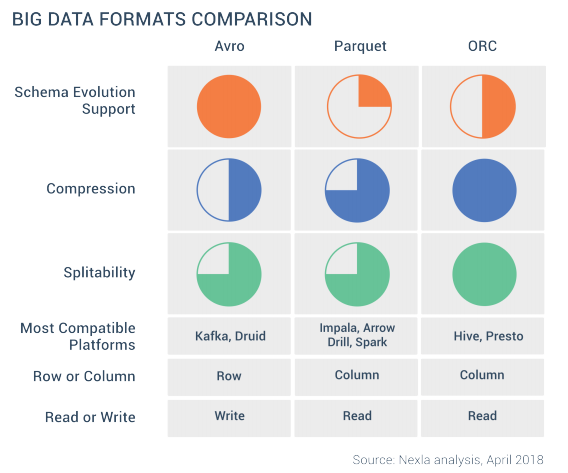

大数据文件格式
本文旨在介绍常见的大数据文件格式，如 Avro、Parquet 和 ORC，了解它们是如何被开发出来的，以及它们的优点和缺点。

最关键的问题是：在实践中，为实现最优的性能，我们该如何选择合适的大数据文件格式？
前言
大数据文件格式时间线：
1 | CSV(1978)-> XML(1996) -> JSON(2001) -> Thrift(2007) -> Protobuf(2008) |
在开始具体讨论 Avro、Parquet 及 ORC 之前，我们需要先建立一个评估框架，站在工程师的角度上考虑如何选择合适的大数据文件格式。该评估框架主要包含四个关键因素：
- Row vs Column: 行式存储 or 列式存储
- Schema management: 模式管理
- Splitability: 分片能力
- Compression: 压缩
接下来，我们将依次介绍评估框架涉及的四个关键因素，引入一些前置知识，以帮助我们思考如何选择合适的文件格式。
评估框架 - 行存储 vs 列存储
首先，对于行式存储及列式存储的文件格式，需要判断哪种是最适合我们需求的。一般而言，列式存储大多用于执行分析查询，因为这些查询通常只需要从海量数据集中获取部分列的数据。相反地，如果查询需要访问数据行的绝大多数列或全部列，那么行式存储的文件格式将会更加合适。
列式存储：适合从海量数据行中访问部分列数据，如分析查询等。
行式存储：适合访问数据行绝大多数列或全部列的需求。
行式存储是数据表最简单的形式，在高度结构化的数据库系统，如 MySQL 及 Oracle 等中广泛使用。
1 | Emma,Prod1,100.00,2018-04-02;Liam,Prod2,79.99,2018-04-02;Noah,Prod3,19.99,2018-04-01;Olivia,Prod2,79.99,2018-04-03 |
数据处理时是从左到右按行读取的。
不同于行式存储，同样的数据，列式存储形式如下：
1 | Emma,Liam,Noah,Olivia;Prod1,Prod2,Prod3;Prod2;100.00,79.99,19.99,79.99;2018-04-02,2018-04-02,2018-04-01,2018-04-03 |
可以看到，数据按列从上到下存储，采用这种列分组存储形式可以更高效地处理特定列数据计算。
列式存储格式在读取数据时，可以跳过不相关的列，只读取所需的列数据，能够实现高效的计算和压缩。
评估框架 - 模式管理
在数据库中，模式 (schema) 是指数据库的组织形式 - 表、列、视图、主键、关系等等。而当我们讨论单个数据集或数据文件的模式时，则相对要简单得多，此时模式只考虑属性列（attribute）层面，是指存储每个属性及其类型的定义。
The schema stores the definition of each attribute and its type.
在实践中，数据模式会时常发生变动（schema evolution），例如字段变更（修改、增加、删除），字段类型变更。那么如何管理模式演化信息也是我们考虑选择何种文件格式的重要因素之一。
一些可供参考的评估模式管理能力的问题如下：
- 更新模式的难易程度？
- 不同模式版本如何交互？
- 是否人类可读？
- 模式处理的速度？
- 是否影响数据的大小？
我们将会在后文讨论具体文件格式时，尝试回答这些问题。
评估框架 - 分片能力
大数据场景中，数据集通常由成百上千个文件组成，且每个文件可能包含数百万或更多条数据记录。这些基于文件的数据块一般也是持续生成的。要高效地处理这些数据集，需要把作业分成不同的子任务，分配到独立的处理器上并行执行。
数据文件格式的选择在并行实现上会有非常重要的影响。例如，如果一个数据集中的文件包含的是拥有大量数据记录的 XML 或 JSON 记录，这些文件是不可分片的，意味着该数据集无法划分成独立的小部分进行处理。
Splitability: 分片能力，数据格式是否能拆分成独立的小部分，以支撑并行处理。
在本文中介绍的 Avro、Parquet 及 Orc 均支持分片能力，它们之中大多在 MapReduce 生态系统中扮演着重要的角色，能够将大型的数据块分割成更小更适合处理的数据块。
评估框架 - 压缩
数据压缩可以降低数据存储和传输的需求，通常能够节省金钱和时间。压缩技术通过对频繁重复出现的数据进行编码来实现。
相比于行式存储的数据，列式存储数据可以获得更高的压缩率。因为数据值按列存储，同类型数据值放在一起，可以实现更高效地压缩。
尽管使用压缩技术能够显著地节省存储开销，但我们还需要考虑采用压缩所需的计算资源开销，解压缩同样需要消耗计算资源。因此，考虑压缩时，需要权衡计算资源和存储资源的开销。
文件格式
通过上文引入的评估框架，现在我们可以通过框架介绍的四种考量来判断该使用哪种大数据文件格式了。接下来，我们将进一步介绍目前常见的大数据文件格式：Avro、Parquet、ORC。
Avro
Apache Avro 由 Hadoop 工作组于 2009 年发布。它是一种高度可分片的行式存储格式。Avro 的革新和关键特性是模式与数据一起传输，模式以 JSON 格式存储而数据则保持二进制格式，在最小化文件大小的同时最大化处理效率。
Avro 还支持模式演化，适合存在潜在数据变更需求的场景。借助 Avro 管理模式的能力，在不同时间点，我们都能在低不兼容风险情况下，独立地对组件进行更新。由于 Avro 的模式所有版本均以可读 JSON 格式存储，开发人员可以很容易地了解数据可用的所有字段。不再需要开发人员写 If-else 语句来处理不同的模式版本，也不需要通过看旧的代码来了解旧的模式版本。
Avro 支持多种编程语言，且由于模式定义以 JSON 格式存储而数据以二进制格式存储，Avro 还算是数据存储和传输场景中相对紧凑的选项。一般地，Avro 比较适合重数据写的场景，因为它可以很容易地新增数据行。
Parquet
2013年，受 Google Dremel Query System 启发，Parquet 由 Cloudera 和 Twitter 开发，作为 Hadoop 上的一种优化列式数据存储而存在。因为数据列式存储，它可高度压缩且支持分片能力。Parquet 通常会和 Impala (Hadoop MPP) 一起使用。
Parquet 文件中的元数据 (metadata) 存储于文件末尾处，以便快速地进行写入。其中元数据包括数据类型、模式压缩编码、统计数据等信息。
Parquet 非常适合分析拥有许多列的宽数据集场景。 Parquet 文件包含的二进制数据以 row group (行组)的形式进行组织，对于每一个行组，其中的数据以列的形式组织。面对重数据读取场景时，Parquet 将会是一个非常不错的选择。
需要注意的是，Parquet 文件虽然支持模式演化，但并不是所有使用 Parquet 文件的系统都能很好地支持模式演化，例如 Impala，因为数据库对于同一张表需要维护至少两个版本的模式，所以 Impala 很难支持模式演化功能。
ORC
ORC (Optimized Row Columnar，优化的行列式存储) 格式由 Hortonworks 开发，用于提升 Hive 的存储及性能。ORC 将行数据以列形式进行存储，这种行-列格式能够实现高效的压缩及存储，允许跨集群并行处理，且这种列式格式能够跳过不需要的列以提高处理和解压缩的速度。ORC 格式同样比较适合重数据读取的场景。
因为 ORC 的索引系统（index system），它支持高级的压缩功能。ORC 文件结构包含数据条（stripes of data），这些数据条作为数据构建块彼此间独立，这意味着，对于任意给定查询，可以直接跳到所需的数据 stripe ，而在具体的 stripe 内，reader 读取数据可以专注于所需的列。footer 文件包含数据 stripe 中每一列的统计信息，如 count，sum，min，max等。

与 Parquet 类似，ORC 文件格式同样支持模式演化，但具体效果还取决于实际数据存储（data store）的支持情况，如 Hive，最近引入了一些高级特性，允许新增列（appending columns）、类型转换（type conversion）以及名称映射（name mapping）。
格式选择

上图是本文介绍的 Avro、Parquet 及 ORC 在评估框架各因素间的比较。在考虑如何选择合适的数据格式时，我们首先面临的问题便是：数据是适合行式存储？还是更适合列式存储？
对于事务数据等需要同时处理数据行的许多列的场景，会比较适合按行式存储，那么 Avro 将会最佳选择，它也是面对重数据写场景的典型选择。
如果数据更适合按列式存储，那么问题就变成了在 Parquet 和 ORC 间作出选择了。除考虑分片能力（Splitability）、压缩（Compression）及模式演化（schema evolution）支持情况外，我们还需将使用的平台的兼容性也纳入考虑，如 Avro 更适合 Kafka, Druid，而 Parquet 则是 Impala，Arrow， Spark 等，ORC 可以在 Hive 中发挥出最大性能表现。可以根据实际使用的系统和对数据格式的熟悉情况来做抉择。 不同于行式存储格式，列式存储更适合于重数据读取场景。
总结
在本文中，我们了解了大数据的常见数据格式，并简单讨论了它们各自的优缺点，并采用了一个评估框架来权衡它们以帮助我们在实践中选择合适的数据格式。理想情况下，我们可以根据需求选择合适的数据格式，但现实中数据可能以各种形式存储，如 CSV，JSON，XML 等，为使数据处理和存储发挥最大的性能表现，一般需要将数据的原始格式进行转化。
References
1、An Introduction to Big Data Formats - Understanding Avro, Parquet, and ORC —— Nexla
2、https://www.datanami.com/2018/05/16/big-data-file-formats-demystified
3、https://towardsdatascience.com/demystify-hadoop-data-formats-avro-orc-and-parquet-e428709cf3bb